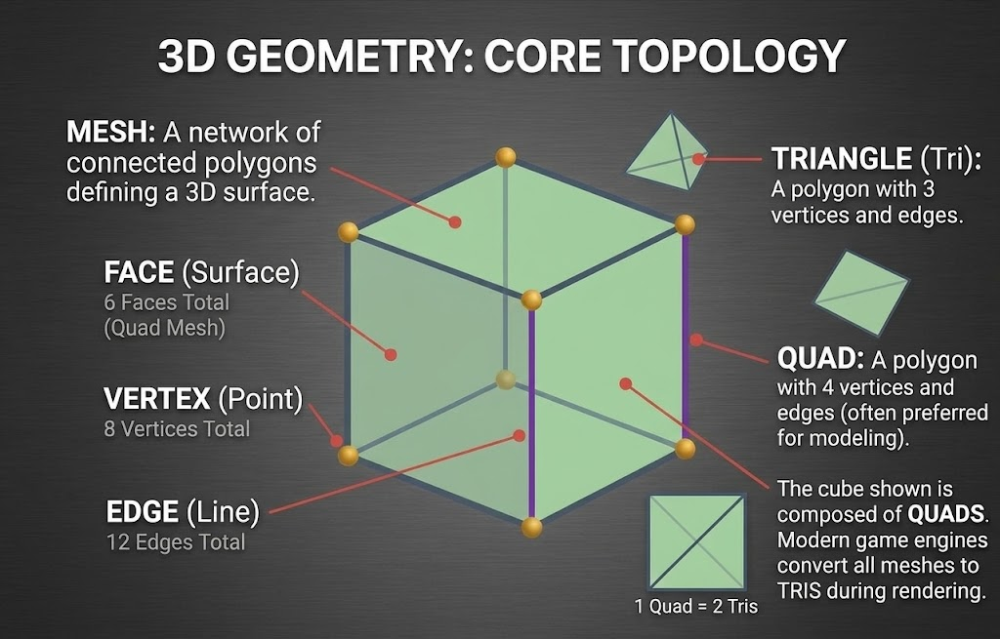
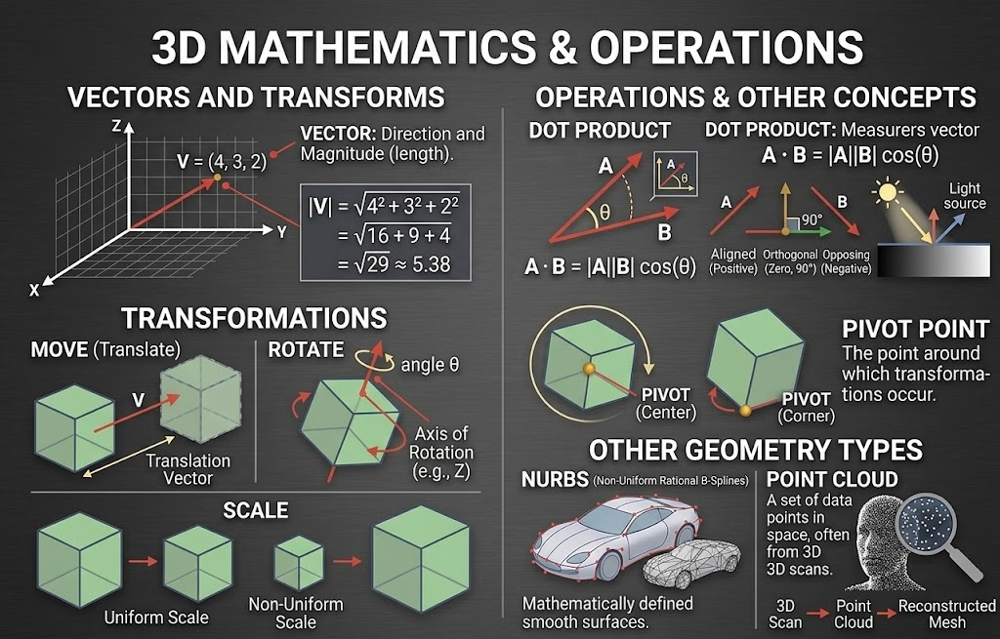
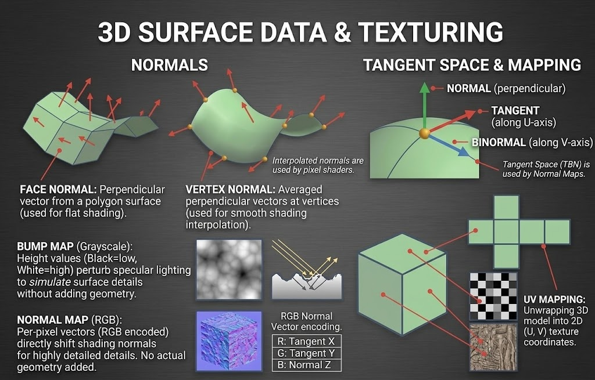
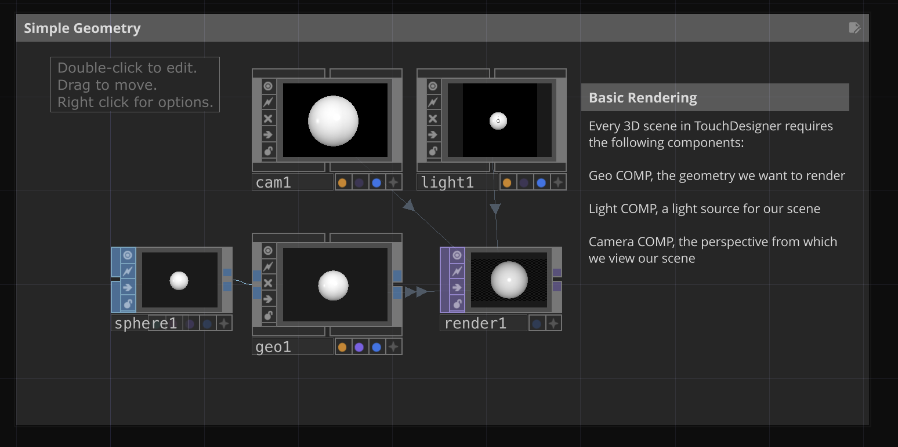
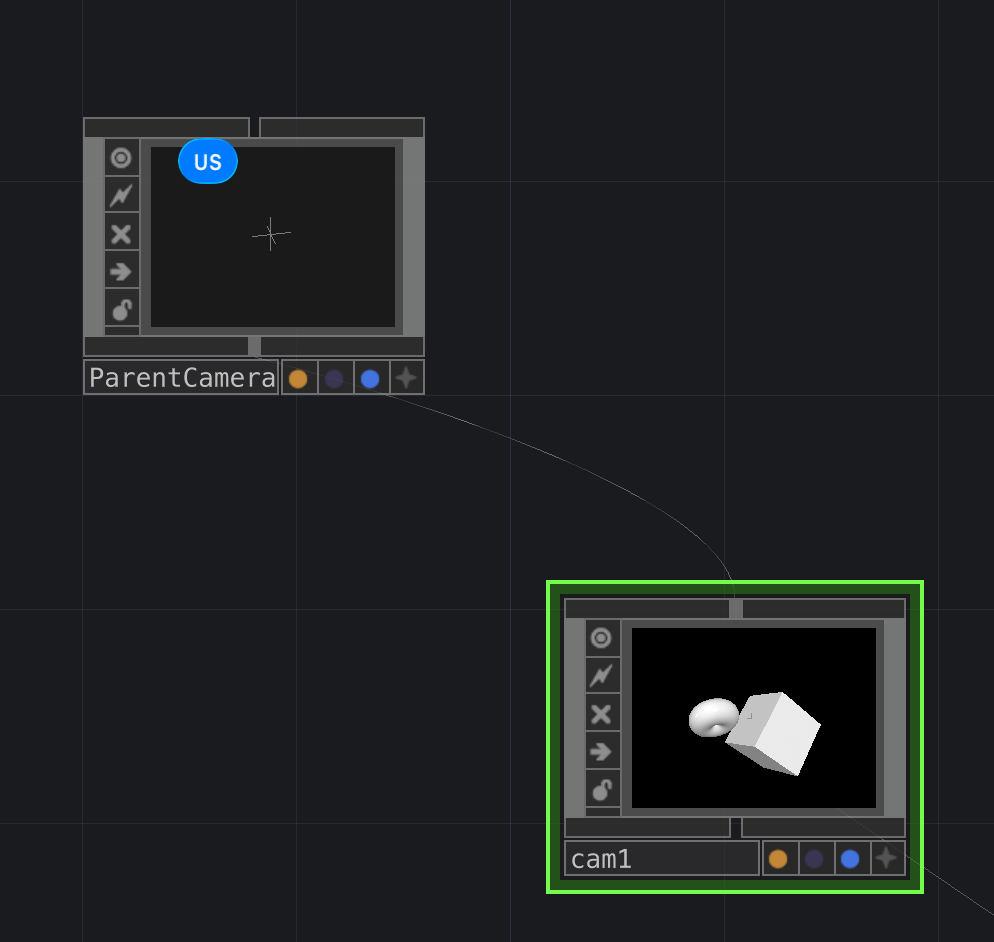
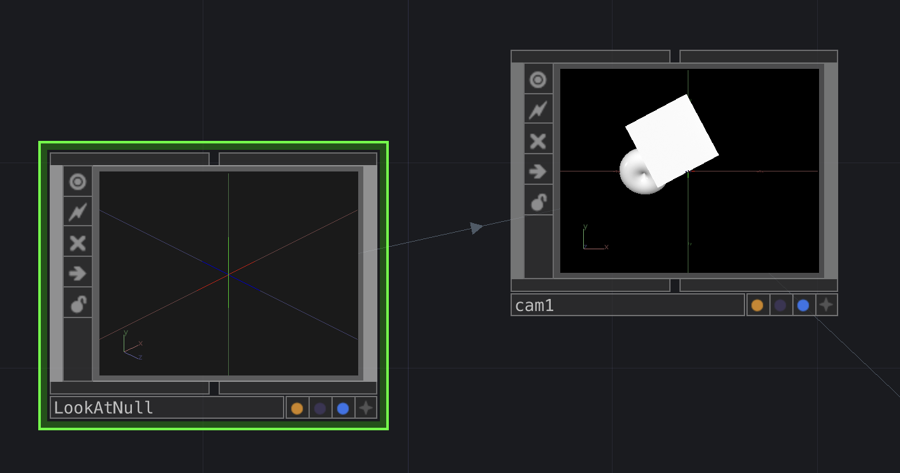
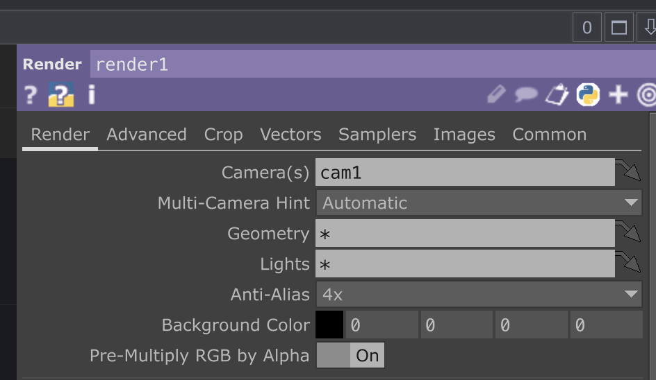
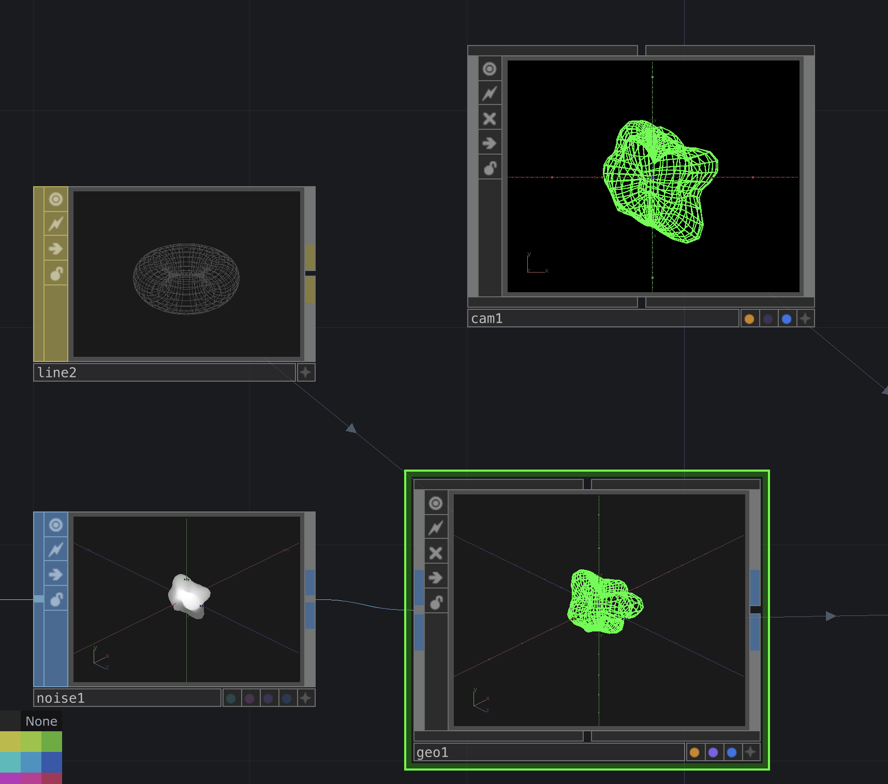
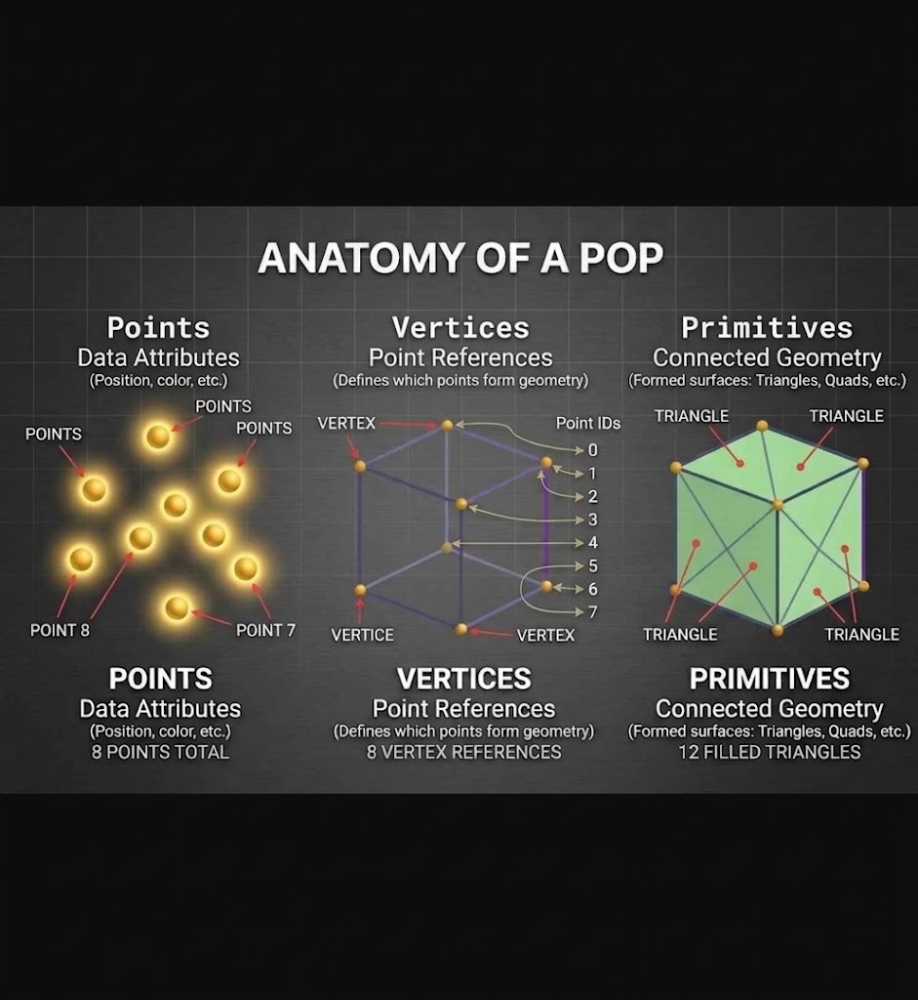

The building blocks of any 3D shape: a point is a vertex, two connected vertices make an edge, and edges closed into a flat shape make a face. Triangles and quads are the two kinds of faces you will see most, and every quad is really just two triangles underneath.

A vector is a direction and a magnitude, like V = (4, 3, 2). Objects move through three transforms: move, rotate, and scale, each one happening around a pivot point. The dot product compares two vectors: positive when they point roughly the same way, zero at a right angle, negative when they oppose.

Normals describe which way a surface faces, flat per face or smoothed per vertex. Tangent space adds two more directions along the surface itself, which is what a normal map is built on: a bump map is grayscale height only, a normal map is a full RGB direction per pixel, and UV mapping is how a flat image gets wrapped onto the 3D shape in the first place.

This part applies no matter what’s feeding the geometry, SOPs or POPs. Every 3D scene shares the same rendering and material basics.
Every 3D scene in TouchDesigner needs three things: a Geo COMP, a Light COMP, and a Camera COMP.

A child component inherits its parent’s movement, which is how a NULL COMP can drive a camera’s position or aim.


The wildcard asterisk means “everything that matches,” convenient while building but it quietly picks up anything added later too. Naming the actual operator scopes the render to exactly what’s intended.

A MAT defines how a surface responds to light: color, shininess, and texture, separate from the geometry and the lighting.

SOPs are how TouchDesigner has built 3D geometry for years, solid shapes run on the CPU. POPs are new, point cloud geometry run on the GPU, which can handle far more points at once.
A cube broken into what a POP actually tracks: 8 points, 8 vertex references, 12 filled triangles.
